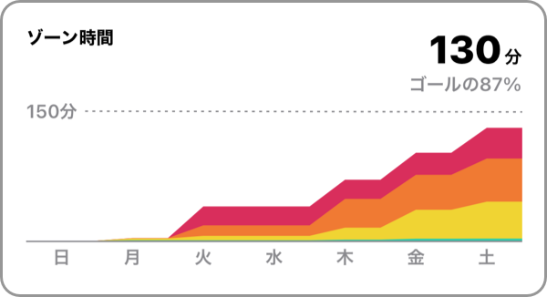

ゾーン時間とは、ゾーンに滞在していた合計時間です。

週の目標の初期値は、150分 です。
「設定」 > 「週の目標」で、目標値を変更することができます。
運動時間とは一致しない場合があります。
| 心拍ゾーン | 滞在時間 | ゾーン時間 |
|---|---|---|
| Zone 5 | 1分 | 1分 |
| Zone 4 | 1分 | 1分 |
| Zone 3 | 1分 | 1分 |
| Zone 2 | 1分 | 1分 |
| Zone 1 | 1分 | 1分 |
| Zone 1未満 | 1分 | 0分 |
上記のようなワークアウトの場合、運動時間は6分ですが、ゾーン時間は5分になります。
さらに、「低強度の運動を除く」をONにしている場合は、5分よりも低くなる可能性があります。
心拍データがないワークアウトは、ゾーン時間は0分になります。